Objective 3 · Mobile Dev Project · SUP'COM
Know what's connected.
Understand what's happening.
Protect your network.
A Flutter app + a Python backend that watch the home Wi-Fi: devices, alerts, traffic and network health.
Salem Essid · Fedi Jlassi · Hajer Kammoun · Mahdi Maati · Mohamed Amine Trabelsi
Teacher: Takwa Omri
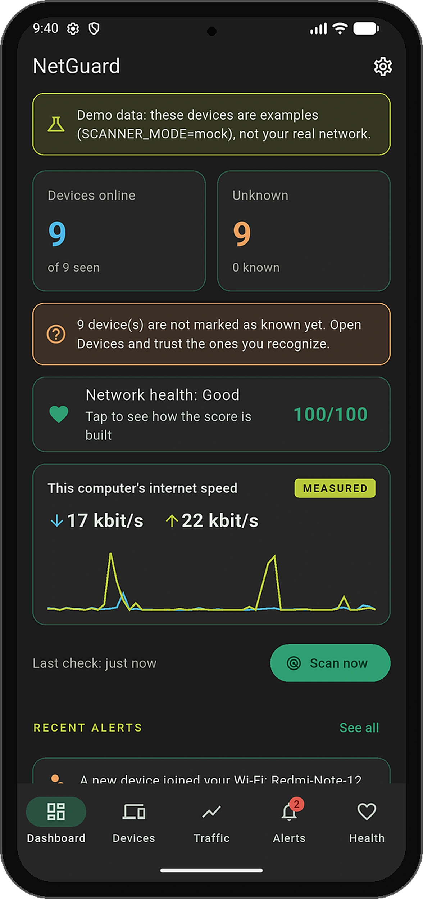
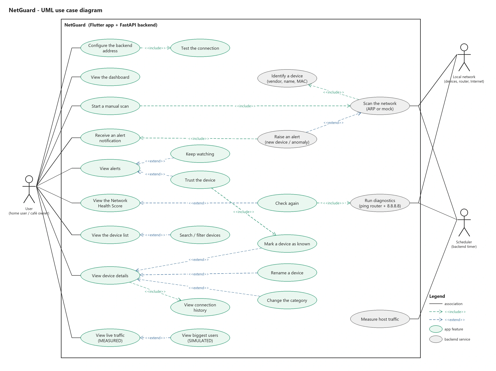
02 · Mockups · real screens of the app
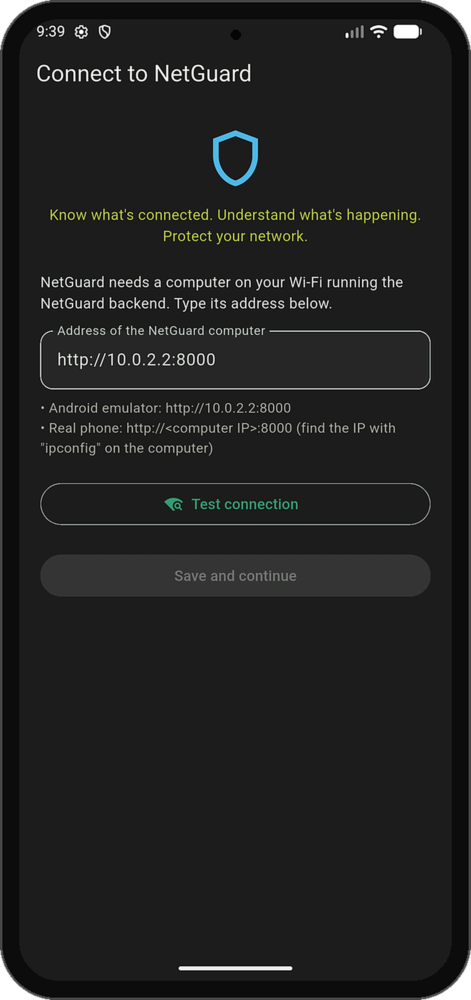
02 · Mockups · real screens of the app
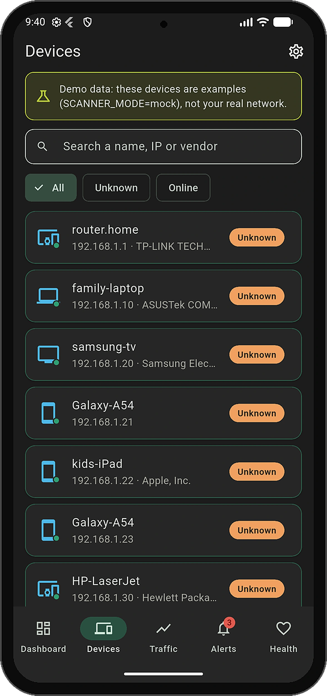
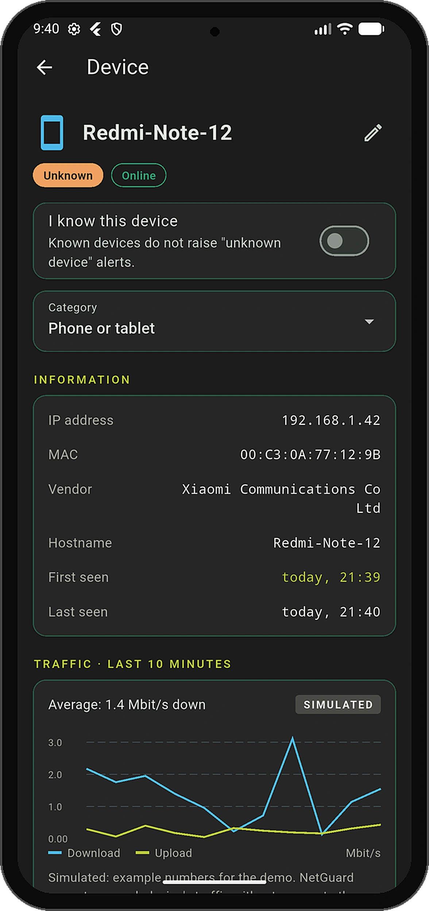
02 · Mockups · real screens of the app
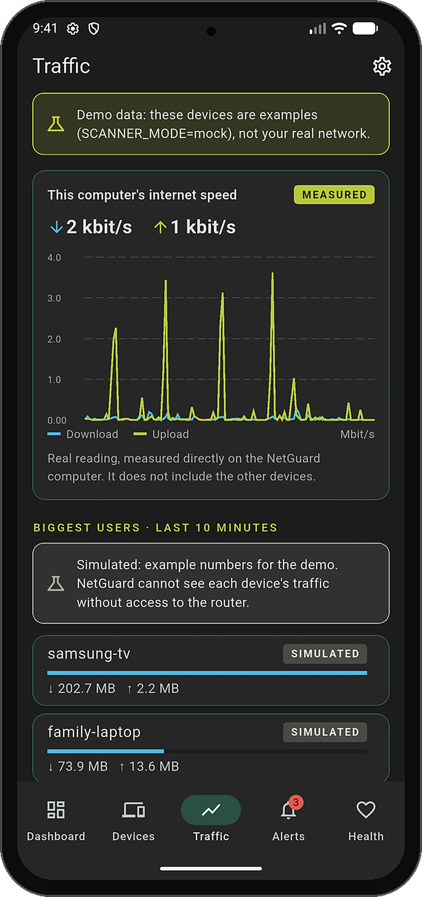
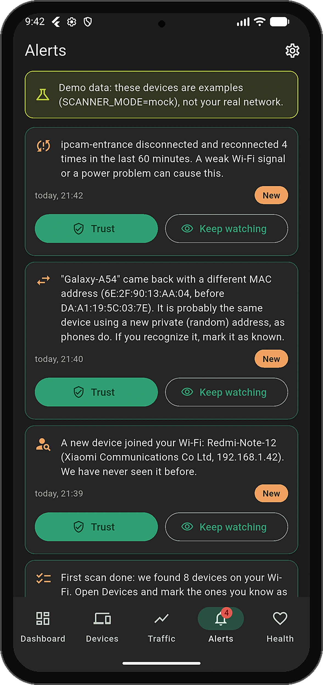
02 · Mockups · real screens of the app
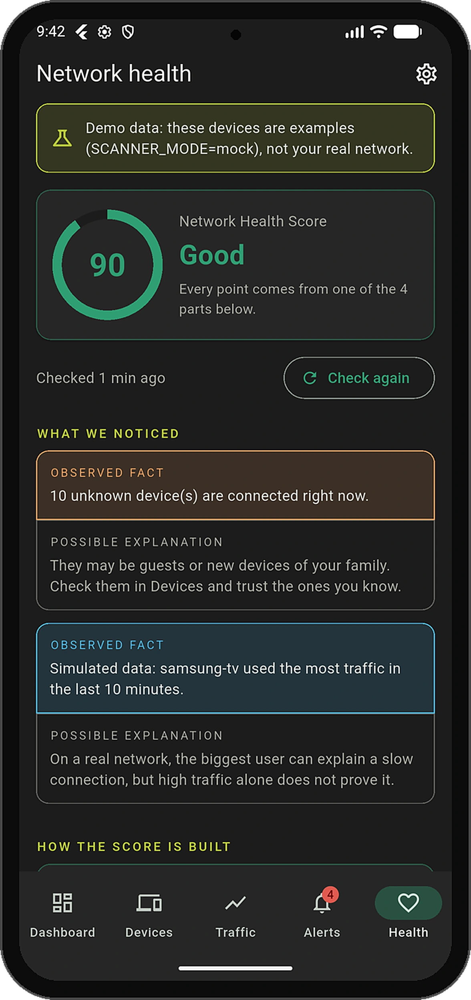
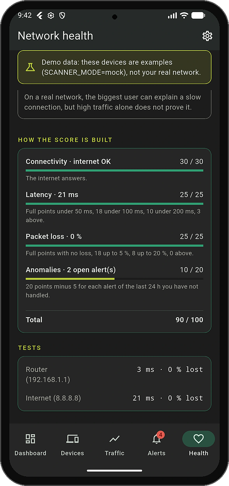
03 · Navigation
04 · Prototype · the working app
Internet addresses are refused
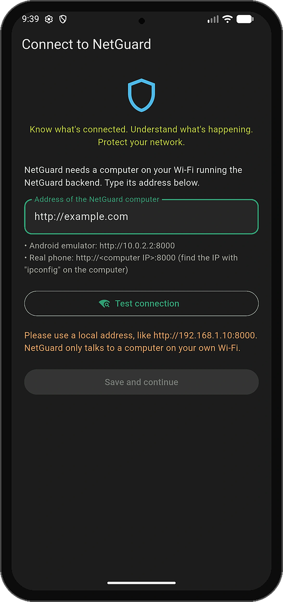
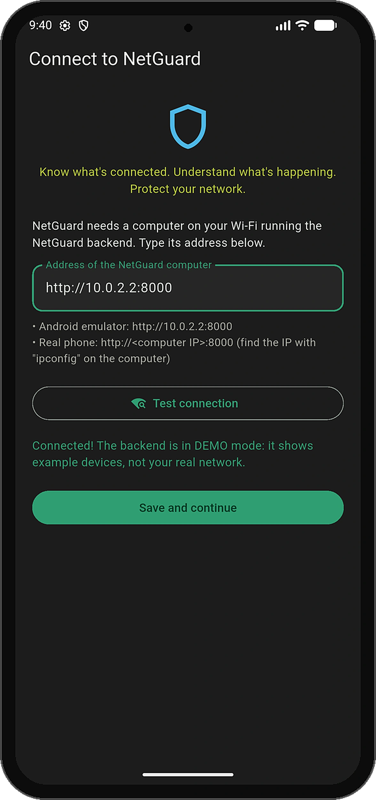
Save unlocks after a good test
04 · Prototype · the working app
Shown even outside the app
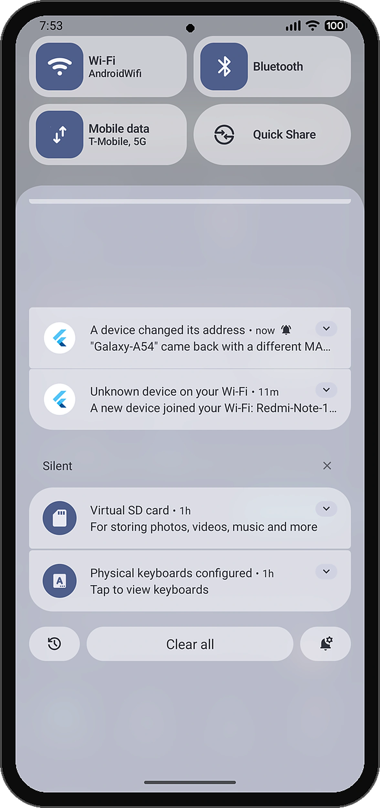
Explains it in plain words
04 · Prototype · the working app
Two choices under each alert
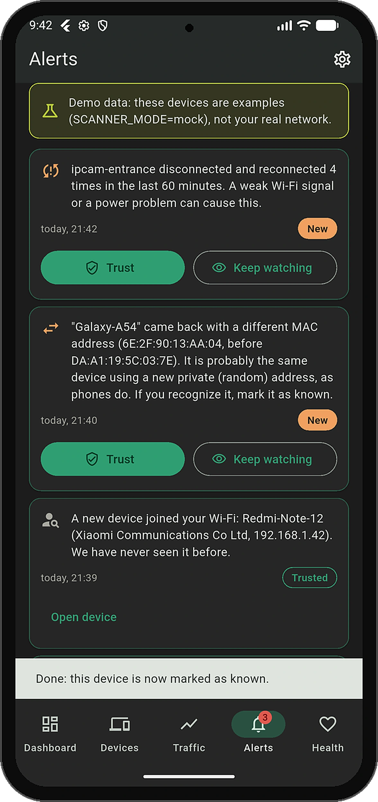
Confirmed instantly
04 · Prototype · the working app
"Open device" link below
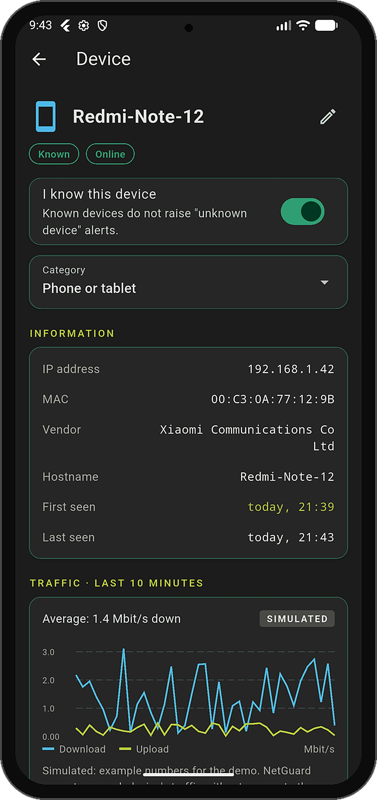
Known badge on: no more alerts
05 · Ergonomic evaluation (Bastien & Scapin)
Hints on Setup, section titles, "Scan done" message
Dashboard readable in seconds; search and filters
Nothing changes without a tap; Save only after a test
Rename and categories, but English only, dark theme only
Local-address check, plain errors, offline banner
Same cards, badges and bottom bar on every tab
Green = known, orange = unknown, red = offline
Plain words and Android patterns, but no French yet